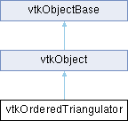

|
Etrek
|
|
Etrek
|
helper class to generate triangulations More...
#include <vtkOrderedTriangulator.h>

Public Member Functions | |
| vtkTypeMacro (vtkOrderedTriangulator, vtkObject) | |
| void | PrintSelf (ostream &os, vtkIndent indent) override |
| void | UpdatePointType (vtkIdType internalId, int type) |
| void | InitTriangulation (double xmin, double xmax, double ymin, double ymax, double zmin, double zmax, int numPts) |
| void | InitTriangulation (double bounds[6], int numPts) |
| vtkIdType | InsertPoint (vtkIdType id, double x[3], double p[3], int type) |
| vtkIdType | InsertPoint (vtkIdType id, vtkIdType sortid, double x[3], double p[3], int type) |
| vtkIdType | InsertPoint (vtkIdType id, vtkIdType sortid, vtkIdType sortid2, double x[3], double p[3], int type) |
| void | Triangulate () |
| void | TemplateTriangulate (int cellType, int numPts, int numEdges) |
| Public Member Functions inherited from vtkObject | |
| vtkBaseTypeMacro (vtkObject, vtkObjectBase) | |
| virtual void | DebugOn () |
| virtual void | DebugOff () |
| bool | GetDebug () |
| void | SetDebug (bool debugFlag) |
| virtual void | Modified () |
| virtual vtkMTimeType | GetMTime () |
| void | RemoveObserver (unsigned long tag) |
| void | RemoveObservers (unsigned long event) |
| void | RemoveObservers (const char *event) |
| void | RemoveAllObservers () |
| vtkTypeBool | HasObserver (unsigned long event) |
| vtkTypeBool | HasObserver (const char *event) |
| vtkTypeBool | InvokeEvent (unsigned long event) |
| vtkTypeBool | InvokeEvent (const char *event) |
| std::string | GetObjectDescription () const override |
| unsigned long | AddObserver (unsigned long event, vtkCommand *, float priority=0.0f) |
| unsigned long | AddObserver (const char *event, vtkCommand *, float priority=0.0f) |
| vtkCommand * | GetCommand (unsigned long tag) |
| void | RemoveObserver (vtkCommand *) |
| void | RemoveObservers (unsigned long event, vtkCommand *) |
| void | RemoveObservers (const char *event, vtkCommand *) |
| vtkTypeBool | HasObserver (unsigned long event, vtkCommand *) |
| vtkTypeBool | HasObserver (const char *event, vtkCommand *) |
| template<class U, class T> | |
| unsigned long | AddObserver (unsigned long event, U observer, void(T::*callback)(), float priority=0.0f) |
| template<class U, class T> | |
| unsigned long | AddObserver (unsigned long event, U observer, void(T::*callback)(vtkObject *, unsigned long, void *), float priority=0.0f) |
| template<class U, class T> | |
| unsigned long | AddObserver (unsigned long event, U observer, bool(T::*callback)(vtkObject *, unsigned long, void *), float priority=0.0f) |
| vtkTypeBool | InvokeEvent (unsigned long event, void *callData) |
| vtkTypeBool | InvokeEvent (const char *event, void *callData) |
| virtual void | SetObjectName (const std::string &objectName) |
| virtual std::string | GetObjectName () const |
| Public Member Functions inherited from vtkObjectBase | |
| const char * | GetClassName () const |
| virtual vtkTypeBool | IsA (const char *name) |
| virtual vtkIdType | GetNumberOfGenerationsFromBase (const char *name) |
| virtual void | Delete () |
| virtual void | FastDelete () |
| void | InitializeObjectBase () |
| void | Print (ostream &os) |
| void | Register (vtkObjectBase *o) |
| virtual void | UnRegister (vtkObjectBase *o) |
| int | GetReferenceCount () |
| void | SetReferenceCount (int) |
| bool | GetIsInMemkind () const |
| virtual void | PrintHeader (ostream &os, vtkIndent indent) |
| virtual void | PrintTrailer (ostream &os, vtkIndent indent) |
| virtual bool | UsesGarbageCollector () const |
Static Public Member Functions | |
| static vtkOrderedTriangulator * | New () |
| Static Public Member Functions inherited from vtkObject | |
| static vtkObject * | New () |
| static void | BreakOnError () |
| static void | SetGlobalWarningDisplay (vtkTypeBool val) |
| static void | GlobalWarningDisplayOn () |
| static void | GlobalWarningDisplayOff () |
| static vtkTypeBool | GetGlobalWarningDisplay () |
| Static Public Member Functions inherited from vtkObjectBase | |
| static vtkTypeBool | IsTypeOf (const char *name) |
| static vtkIdType | GetNumberOfGenerationsFromBaseType (const char *name) |
| static vtkObjectBase * | New () |
| static void | SetMemkindDirectory (const char *directoryname) |
| static bool | GetUsingMemkind () |
| vtkGetMacro (NumberOfPoints, int) | |
| ** | vtkGetMacro (UseTemplates, vtkTypeBool) |
| vtkBooleanMacro (UseTemplates, vtkTypeBool) | |
| ** | vtkGetMacro (PreSorted, vtkTypeBool) |
| vtkBooleanMacro (PreSorted, vtkTypeBool) | |
| ** | vtkGetMacro (UseTwoSortIds, vtkTypeBool) |
| vtkBooleanMacro (UseTwoSortIds, vtkTypeBool) | |
| *vtkIdType | GetTetras (int classification, vtkUnstructuredGrid *ugrid) |
| vtkIdType | AddTetras (int classification, vtkUnstructuredGrid *ugrid) |
| vtkIdType | AddTetras (int classification, vtkCellArray *connectivity) |
| vtkIdType | AddTetras (int classification, vtkIdList *ptIds, vtkPoints *pts) |
| vtkIdType | AddTetras (int classification, vtkIdList *ptIds) |
| vtkIdType | AddTriangles (vtkCellArray *connectivity) |
| vtkIdType | AddTriangles (vtkIdType id, vtkCellArray *connectivity) |
| void | InitTetraTraversal () |
| int | GetNextTetra (int classification, vtkTetra *tet, vtkDataArray *cellScalars, vtkDoubleArray *tetScalars) |
Additional Inherited Members | |
| Protected Member Functions inherited from vtkObject | |
| void | RegisterInternal (vtkObjectBase *, vtkTypeBool check) override |
| void | UnRegisterInternal (vtkObjectBase *, vtkTypeBool check) override |
| void | InternalGrabFocus (vtkCommand *mouseEvents, vtkCommand *keypressEvents=nullptr) |
| void | InternalReleaseFocus () |
| Protected Member Functions inherited from vtkObjectBase | |
| virtual void | ReportReferences (vtkGarbageCollector *) |
| vtkObjectBase (const vtkObjectBase &) | |
| void | operator= (const vtkObjectBase &) |
| Static Protected Member Functions inherited from vtkObjectBase | |
| static vtkMallocingFunction | GetCurrentMallocFunction () |
| static vtkReallocingFunction | GetCurrentReallocFunction () |
| static vtkFreeingFunction | GetCurrentFreeFunction () |
| static vtkFreeingFunction | GetAlternateFreeFunction () |
| Protected Attributes inherited from vtkObject | |
| bool | Debug |
| vtkTimeStamp | MTime |
| vtkSubjectHelper * | SubjectHelper |
| std::string | ObjectName |
| Protected Attributes inherited from vtkObjectBase | |
| std::atomic< int32_t > | ReferenceCount |
| vtkWeakPointerBase ** | WeakPointers |
helper class to generate triangulations
This class is used to generate unique triangulations of points. The uniqueness of the triangulation is controlled by the id of the inserted points in combination with a Delaunay criterion. The class is designed to be as fast as possible (since the algorithm can be slow) and uses block memory allocations to support rapid triangulation generation. Also, the assumption behind the class is that a maximum of hundreds of points are to be triangulated. If you desire more robust triangulation methods use vtkPolygon::Triangulate(), vtkDelaunay2D, or vtkDelaunay3D.
| vtkIdType vtkOrderedTriangulator::AddTetras | ( | int | classification, |
| vtkCellArray * | connectivity ) |
Add the tetrahedra classified (0=inside,1=outside) to the connectivity list provided. Inside tetrahedron are those whose points are all classified "inside." Outside tetrahedron have at least one point classified "outside." The method returns the number of tetrahedron of the type requested.
| vtkIdType vtkOrderedTriangulator::AddTetras | ( | int | classification, |
| vtkIdList * | ptIds ) |
Add the tetrahedra classified (0=inside,1=outside) to the list of ids. These assume that the first four points form a tetrahedron, the next four the next, and so on.
| vtkIdType vtkOrderedTriangulator::AddTetras | ( | int | classification, |
| vtkIdList * | ptIds, | ||
| vtkPoints * | pts ) |
Assuming that all the inserted points come from a cell `cellId' to triangulate, get the tetrahedra in outConnectivity, the points in locator and copy point data and cell data. Return the number of added tetras.
/** Add the tetrahedra classified (0=inside,1=outside) to the list of ids and coordinates provided. These assume that the first four points form a tetrahedron, the next four the next, and so on.
| vtkIdType vtkOrderedTriangulator::AddTetras | ( | int | classification, |
| vtkUnstructuredGrid * | ugrid ) |
Add the tetras to the unstructured grid provided. The unstructured grid is assumed to have been initialized (with Allocate()) and points set (with SetPoints()). The tetrahdera added are of the type specified (0=inside,1=outside,2=all). Inside tetrahedron are those whose points are classified "inside" or on the "boundary." Outside tetrahedron have at least one point classified "outside." The method returns the number of tetrahedrahedron of the type requested.
| vtkIdType vtkOrderedTriangulator::AddTriangles | ( | vtkCellArray * | connectivity | ) |
Add the triangle faces classified (2=boundary) to the connectivity list provided. The method returns the number of triangles.
| vtkIdType vtkOrderedTriangulator::AddTriangles | ( | vtkIdType | id, |
| vtkCellArray * | connectivity ) |
Add the triangle faces classified (2=boundary) and attached to the specified point id to the connectivity list provided. (The id is the same as that specified in InsertPoint().)
| int vtkOrderedTriangulator::GetNextTetra | ( | int | classification, |
| vtkTetra * | tet, | ||
| vtkDataArray * | cellScalars, | ||
| vtkDoubleArray * | tetScalars ) |
Methods to get one tetra at a time. Start with InitTetraTraversal() and then invoke GetNextTetra() until the method returns 0. cellScalars are point-centered scalars on the original cell. tetScalars are point-centered scalars on the tetra: the values will be copied from cellScalars.
| *vtkIdType vtkOrderedTriangulator::GetTetras | ( | int | classification, |
| vtkUnstructuredGrid * | ugrid ) |
Initialize and add the tetras and points from the triangulation to the unstructured grid provided. New points are created and the mesh is allocated. (This method differs from AddTetras() in that it inserts points and cells; AddTetras only adds the tetra cells.) The tetrahdera added are of the type specified (0=inside,1=outside,2=all). Inside tetrahedron are those whose points are classified "inside" or on the "boundary." Outside tetrahedron have at least one point classified "outside." The method returns the number of tetrahedrahedron of the type requested.
| void vtkOrderedTriangulator::InitTetraTraversal | ( | ) |
Methods to get one tetra at a time. Start with InitTetraTraversal() and then invoke GetNextTetra() until the method returns 0.
| void vtkOrderedTriangulator::InitTriangulation | ( | double | xmin, |
| double | xmax, | ||
| double | ymin, | ||
| double | ymax, | ||
| double | zmin, | ||
| double | zmax, | ||
| int | numPts ) |
Initialize the triangulation process. Provide a bounding box and the maximum number of points to be inserted. Note that since the triangulation is performed using parametric coordinates (see InsertPoint()) the bounds should be represent the range of the parametric coordinates inserted.
| vtkIdType vtkOrderedTriangulator::InsertPoint | ( | vtkIdType | id, |
| double | x[3], | ||
| double | p[3], | ||
| int | type ) |
For each point to be inserted, provide an id, a position x, parametric coordinate p, and whether the point is inside (type=0), outside (type=1), or on the boundary (type=2). You must call InitTriangulation() prior to invoking this method. Make sure that the number of points inserted does not exceed the numPts specified in InitTriangulation(). Also note that the "id" can be any integer and can be greater than numPts. It is used to create tetras (in AddTetras()) with the appropriate connectivity ids. The method returns an internal id that can be used prior to the Triangulate() method to update the type of the point with UpdatePointType(). (Note: the algorithm triangulated with the parametric coordinate p[3] and creates tetras with the global coordinate x[3]. The parametric coordinates and global coordinates may be the same.)
|
static |
Construct object.
|
overridevirtual |
| void vtkOrderedTriangulator::Triangulate | ( | ) |
Perform the triangulation. (Complete all calls to InsertPoint() prior to invoking this method.) A special version is available when templates should be used.
| void vtkOrderedTriangulator::UpdatePointType | ( | vtkIdType | internalId, |
| int | type ) |
Update the point type. This is useful when the merging of nearly coincident points is performed. The id is the internal id returned from InsertPoint(). The method should be invoked prior to the Triangulate method. The type is specified as inside (type=0), outside (type=1), or on the boundary (type=2).
| vtkOrderedTriangulator::vtkGetMacro | ( | NumberOfPoints | , |
| int | ) |
Return the parametric coordinates of point `internalId'. It assumes that the point has already been inserted. The method should be invoked prior to the Triangulate method.
/** Return the global coordinates of point `internalId'. It assumes that the point has already been inserted. The method should be invoked prior to the Triangulate method.
/** Return the Id of point `internalId'. This id is the one passed in argument of InsertPoint. It assumes that the point has already been inserted. The method should be invoked prior to the Triangulate method.
/** Return the number of inserted points.